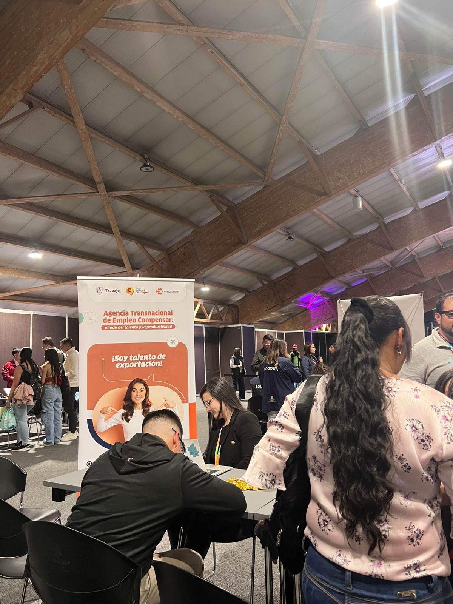
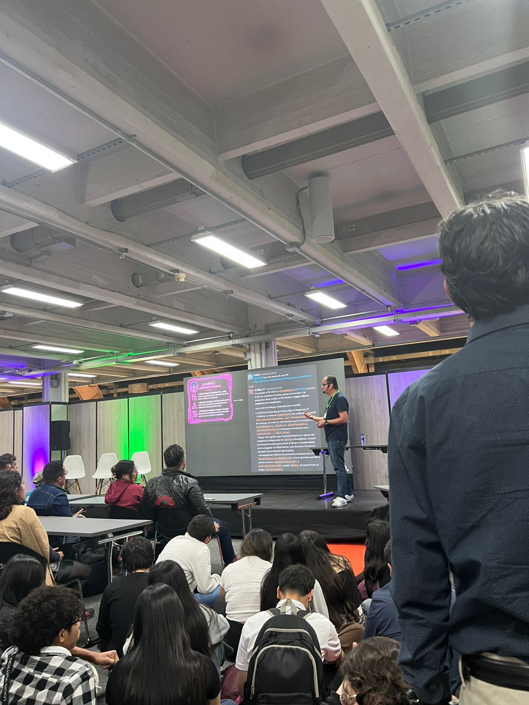

Habilidades humanas irreemplazables y liderazgo por Borja Castelar.
En esta charla con Borja Castelar, aprendí cómo la Inteligencia Artificial está transformando nuestras futuras dinámicas laborales. Su enfoque me pareció muy motivador porque no fue alarmista; al contrario, nos demostró que la IA no viene a reemplazarnos como profesionales, sino a potenciar nuestras habilidades. Para nosotros como desarrolladores, el aprendizaje continuo y la curiosidad técnica surgen como las ventajas más grandes para el futuro.
In this talk with Borja Castelar, I learned how Artificial Intelligence is transforming the future of work. I found his approach very motivating because it wasn't alarmist; instead, he showed us that AI is not here to replace us as professionals, but to enhance our abilities. For us as developers, continuous learning and technical curiosity stand out as the greatest advantages for the future.

